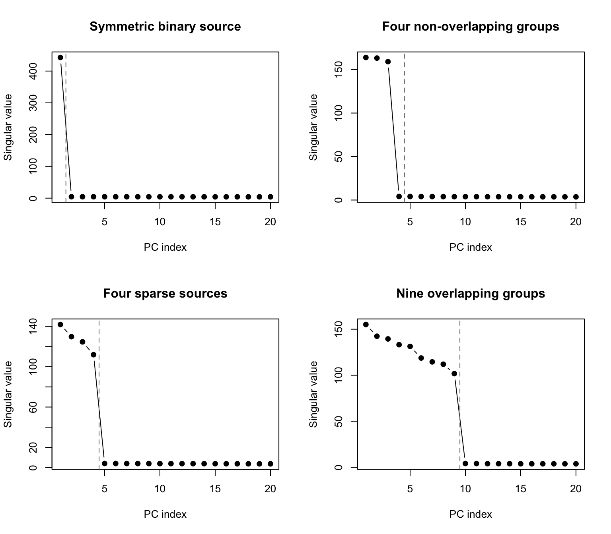

Last updated: 2026-07-28
Checks: 7 0
Knit directory: misc/
This reproducible R Markdown analysis was created with workflowr (version 1.7.2). The Checks tab describes the reproducibility checks that were applied when the results were created. The Past versions tab lists the development history.
Great! Since the R Markdown file has been committed to the Git repository, you know the exact version of the code that produced these results.
Great job! The global environment was empty. Objects defined in the global environment can affect the analysis in your R Markdown file in unknown ways. For reproduciblity it’s best to always run the code in an empty environment.
The command set.seed(20251108) was run prior to running
the code in the R Markdown file. Setting a seed ensures that any results
that rely on randomness, e.g. subsampling or permutations, are
reproducible.
Great job! Recording the operating system, R version, and package versions is critical for reproducibility.
Nice! There were no cached chunks for this analysis, so you can be confident that you successfully produced the results during this run.
Great job! Using relative paths to the files within your workflowr project makes it easier to run your code on other machines.
Great! You are using Git for version control. Tracking code development and connecting the code version to the results is critical for reproducibility.
The results in this page were generated with repository version 6c622a3. See the Past versions tab to see a history of the changes made to the R Markdown and HTML files.
Note that you need to be careful to ensure that all relevant files for
the analysis have been committed to Git prior to generating the results
(you can use wflow_publish or
wflow_git_commit). workflowr only checks the R Markdown
file, but you know if there are other scripts or data files that it
depends on. Below is the status of the Git repository when the results
were generated:
Ignored files:
Ignored: .DS_Store
Ignored: .Rhistory
Ignored: .Rproj.user/
Ignored: .luarc.json
Ignored: _extensions/
Ignored: analysis/.DS_Store
Ignored: analysis/presentation.html
Untracked files:
Untracked: Rplots.pdf
Untracked: analysis/custom.css
Untracked: analysis/draft.Rmd
Untracked: analysis/eb_ica_backup.Rmd
Untracked: analysis/ebica_math.md
Untracked: analysis/ebproj_on_null.Rmd
Untracked: analysis/ebproj_on_random_proj.Rmd
Untracked: analysis/ebproj_single_cell_experiment.Rmd
Untracked: analysis/ebproj_zhengmix4eq.Rmd
Untracked: analysis/flashier_whitened_and_tree_example_tese.Rmd
Untracked: analysis/generalized_rademacher.Rmd
Untracked: analysis/ica_vs_flash_r1_rad copy.Rmd
Untracked: analysis/ica_vs_flash_r1_rad.Rmd
Untracked: analysis/ica_vs_flash_r1_update_2.Rmd
Untracked: analysis/index_bacup.Rmd
Untracked: analysis/math-env-refs.html
Untracked: analysis/note.md
Untracked: analysis/notes.Rmd
Untracked: analysis/preemble.tex
Untracked: analysis/presentation.qmd
Untracked: analysis/references.bib
Untracked: analysis/tree_example.Rmd
Untracked: code/ebproj_functions.R
Untracked: code/references.bib
Unstaged changes:
Modified: .gitignore
Modified: analysis/_site.yml
Modified: analysis/eb_ica.Rmd
Modified: analysis/ebproj.Rmd
Modified: analysis/flashier_whitened_and_tree_example.Rmd
Modified: analysis/ica_vs_flash_r1_update_1.Rmd
Modified: analysis/ica_vs_flashier_r1_rad.Rmd
Modified: analysis/ica_with_noise.Rmd
Modified: analysis/on_flashier_and_whitened_data.Rmd
Modified: analysis/on_generalized_rademacher.Rmd
Modified: analysis/shifted_rademacher_for_ebproj.Rmd
Modified: code/ica_functions.R
Modified: code/utils.R
Note that any generated files, e.g. HTML, png, CSS, etc., are not included in this status report because it is ok for generated content to have uncommitted changes.
These are the previous versions of the repository in which changes were
made to the R Markdown
(analysis/ebproj_rank_sensitivity.Rmd) and HTML
(docs/ebproj_rank_sensitivity.html) files. If you’ve
configured a remote Git repository (see ?wflow_git_remote),
click on the hyperlinks in the table below to view the files as they
were in that past version.
| File | Version | Author | Date | Message |
|---|---|---|---|---|
| Rmd | 6c622a3 | junmingguan | 2026-07-28 | wflow_publish("analysis/ebproj_rank_sensitivity.Rmd") |
source(file.path("code", "ebnm_rademacher.R"))
source(file.path("code", "ebnm_shifted_rademacher.R"))
source(file.path("code", "ica_functions.R"))
source(file.path("code", "ebproj_functions.R"))
n_starts <- 20
kappa <- 1
sigma <- 0.1
k_pca <- 20
power_tilt_gap <- 0.01The reference simulations use
\[ X = A S + E,\qquad A_{jk} \sim N(0,1),\quad E_{ij}\sim N(0,0.1^2). \]
Here \(X\) is stored as features by samples in the reference document and transposed below so our estimators receive samples by features. The first test uses \(n=200\); Tests 2–4 use \(n=100\); all tests use \(p=1000\). The reference retains 20 PCs, so our rank grids start at the true signal rank and end at 20. Increasing \(K\) therefore only adds noise PCs.
recovery_correlation <- function(v, S) {
if (!all(is.finite(v)) || sd(v) == 0) {
return(0)
}
max(abs(cor(v, S)))
}
run_rank_test <- function(X, S, k_grid, test_name, ebnm_fn) {
X <- scale(X, center = TRUE, scale = FALSE)
n_samples <- nrow(X)
set.seed(1)
v_inits <- replicate(
n_starts,
sample(rep(c(-1, 1), length.out = n_samples)),
simplify = FALSE
)
sv <- svd(X, nu = max(k_grid), nv = 0)
results <- data.frame()
for (K in k_grid) {
U <- sv$u[, seq_len(K), drop = FALSE]
P <- tcrossprod(U)
d <- sv$d[seq_len(K)]
W <- tcrossprod(sweep(U, 2, d / d[1], "*"))
W_power <- (1 - power_tilt_gap) * W
Z_whitened <- sqrt(n_samples) * t(U)
Z_nonwhitened <- sweep(t(U), 1, d, "*")
for (start in seq_len(n_starts)) {
w_init <- as.vector(crossprod(U, v_inits[[start]]))
fit_ebproj <- eb_proj_rank1_update(
P = P,
v_init = v_inits[[start]],
ebnm_fn = ebnm_fn,
k = K,
b = 1,
maxiter = 100
)
fit_spiked <- eb_spiked_proj_rank1_update(
P = P,
v_init = v_inits[[start]],
ebnm_fn = ebnm_fn,
k = K,
kappa = kappa,
maxiter = 100
)
fit_weighted <- eb_weighted_proj_rank1_update(
W = W,
eta = n_samples / 2,
m_init = v_inits[[start]],
M_init = sum(v_inits[[start]]^2),
ebnm_fn = ebnm_fn,
maxiter = 100
)
fit_power_tilt <- eb_weighted_proj_pow_tilt_rank1_update(
W = W_power,
gamma = (n_samples - K - 2) / 2,
m_init = v_inits[[start]],
M_init = sum(v_inits[[start]]^2),
ebnm_fn = ebnm_fn,
maxiter = 100
)
w_fastica <- fastica_rank_one_update(
X1 = Z_whitened,
init_w = w_init,
n_iter = 100
)
w_fastica_nw <- fastica_rank_one_update_nonwhitened(
Z = Z_nonwhitened,
d2 = d^2,
init_w = w_init,
n_iter = 100
)
cor_ebproj <- recovery_correlation(fit_ebproj$vbar, S)
cor_spiked <- recovery_correlation(fit_spiked$vbar, S)
cor_weighted <- recovery_correlation(fit_weighted$vbar, S)
cor_power_tilt <- recovery_correlation(fit_power_tilt$vbar, S)
cor_fastica <- recovery_correlation(
as.vector(t(Z_whitened) %*% w_fastica),
S
)
cor_fastica_nw <- recovery_correlation(
as.vector(t(Z_nonwhitened) %*% w_fastica_nw),
S
)
results <- rbind(
results,
data.frame(
test = test_name,
rank = K,
start = start,
method = c(
"EB-proj",
"EB-spiked-proj",
"EB-weighted-proj",
"EB-weighted-proj-pow-tilt",
"FastICA (whitened)",
"FastICA (non-whitened)"
),
correlation = c(
cor_ebproj,
cor_spiked,
cor_weighted,
cor_power_tilt,
cor_fastica,
cor_fastica_nw
)
)
)
}
}
results$success <- results$correlation > 0.9
list(
results = results,
singular_values = sv$d,
k_grid = k_grid,
true_rank = ncol(S)
)
}set.seed(10)
n1 <- 200
p1 <- 1000
k_true1 <- 1
A1 <- matrix(rnorm(p1 * k_true1), nrow = p1)
S_rad <- matrix(sample(c(-1, 1), n1, replace = TRUE), nrow = 1)
X_rad <- A1 %*% S_rad +
matrix(rnorm(p1 * n1, sd = sigma), nrow = p1)
test1 <- run_rank_test(
X = t(X_rad),
S = t(S_rad),
k_grid = c(1, 2, 5, 10, 15, k_pca),
test_name = "Symmetric binary source",
ebnm_fn = ebnm_rademacher
)Each source selects one group of 25 observations. After centering, each source has a shifted binary distribution, so we use the shifted Rademacher EBNM family for all three EB methods.
set.seed(1)
n2 <- 100
p2 <- 1000
k_true2 <- 4
A2 <- matrix(rnorm(p2 * k_true2), nrow = p2)
S_groups <- matrix(0, nrow = k_true2, ncol = n2)
S_groups[1, 1:25] <- 1
S_groups[2, 26:50] <- 1
S_groups[3, 51:75] <- 1
S_groups[4, 76:100] <- 1
X_groups <- A2 %*% S_groups +
matrix(rnorm(p2 * n2, sd = sigma), nrow = p2)
test2 <- run_rank_test(
X = t(X_groups),
S = t(S_groups),
k_grid = c(4, 5, 10, 15, k_pca),
test_name = "Four non-overlapping groups",
ebnm_fn = ebnm_generalized_shifted_rademacher
)Each source is active in 20 randomly chosen observations, independently across sources.
set.seed(2)
n3 <- 100
p3 <- 1000
k_true3 <- 4
prob_active <- 0.2
A3 <- matrix(rnorm(p3 * k_true3), nrow = p3)
S_sparse <- matrix(0, nrow = k_true3, ncol = n3)
for (j in seq_len(k_true3)) {
S_sparse[j, sample(n3, round(prob_active * n3))] <- 1
}
X_sparse <- A3 %*% S_sparse +
matrix(rnorm(p3 * n3, sd = sigma), nrow = p3)
test3 <- run_rank_test(
X = t(X_sparse),
S = t(S_sparse),
k_grid = c(4, 5, 10, 15, k_pca),
test_name = "Four sparse sources",
ebnm_fn = ebnm_generalized_shifted_rademacher
)This is the larger overlapping-group setting from the reference experiment. Each of the nine sources is active in 20 observations.
set.seed(1)
n4 <- 100
p4 <- 1000
k_true4 <- 9
L <- matrix(0, nrow = n4, ncol = k_true4)
for (j in seq_len(k_true4)) {
L[sample(n4, 20), j] <- 1
}
FF <- matrix(rnorm(p4 * k_true4), nrow = p4, ncol = k_true4)
X9 <- t(
L %*% t(FF) +
matrix(rnorm(n4 * p4, sd = sigma), nrow = n4)
)
test4 <- run_rank_test(
X = t(X9),
S = L,
k_grid = c(9, 10, 15, k_pca),
test_name = "Nine overlapping groups",
ebnm_fn = ebnm_generalized_shifted_rademacher
)tests <- list(test1, test2, test3, test4)
test_names <- vapply(tests, function(x) x$results$test[1], character(1))
old_par <- par(mfrow = c(2, 2))
for (i in seq_along(tests)) {
x <- tests[[i]]
plot(
x$singular_values[seq_len(max(x$k_grid))],
type = "b",
pch = 19,
xlab = "PC index",
ylab = "Singular value",
main = test_names[i]
)
abline(v = x$true_rank + 0.5, lty = 2, col = "grey50")
}
par(old_par)results <- do.call(rbind, lapply(tests, `[[`, "results"))
mean_cor <- aggregate(
correlation ~ test + rank + method,
data = results,
FUN = mean
)
names(mean_cor)[4] <- "mean_correlation"
success_rate <- aggregate(
success ~ test + rank + method,
data = results,
FUN = mean
)
summary_results <- merge(mean_cor, success_rate)
summary_results <- summary_results[
order(summary_results$test, summary_results$rank, summary_results$method),
]
for (test_name in test_names) {
test_table <- summary_results[
summary_results$test == test_name,
c("rank", "method", "mean_correlation", "success")
]
cat("\n\n### ", test_name, "\n\n", sep = "")
cat(
knitr::kable(
test_table,
format = "pipe",
digits = 3,
row.names = FALSE
),
sep = "\n"
)
cat("\n\n")
}| rank | method | mean_correlation | success |
|---|---|---|---|
| 1 | EB-proj | 1.000 | 1.00 |
| 1 | EB-spiked-proj | 1.000 | 1.00 |
| 1 | EB-weighted-proj | 1.000 | 1.00 |
| 1 | EB-weighted-proj-pow-tilt | 1.000 | 1.00 |
| 1 | FastICA (non-whitened) | 1.000 | 1.00 |
| 1 | FastICA (whitened) | 1.000 | 1.00 |
| 2 | EB-proj | 0.685 | 0.40 |
| 2 | EB-spiked-proj | 0.698 | 0.45 |
| 2 | EB-weighted-proj | 1.000 | 1.00 |
| 2 | EB-weighted-proj-pow-tilt | 1.000 | 1.00 |
| 2 | FastICA (non-whitened) | 1.000 | 1.00 |
| 2 | FastICA (whitened) | 1.000 | 1.00 |
| 5 | EB-proj | 0.353 | 0.00 |
| 5 | EB-spiked-proj | 0.438 | 0.15 |
| 5 | EB-weighted-proj | 1.000 | 1.00 |
| 5 | EB-weighted-proj-pow-tilt | 1.000 | 1.00 |
| 5 | FastICA (non-whitened) | 1.000 | 1.00 |
| 5 | FastICA (whitened) | 0.711 | 0.65 |
| 10 | EB-proj | 0.234 | 0.00 |
| 10 | EB-spiked-proj | 0.344 | 0.10 |
| 10 | EB-weighted-proj | 1.000 | 1.00 |
| 10 | EB-weighted-proj-pow-tilt | 1.000 | 1.00 |
| 10 | FastICA (non-whitened) | 1.000 | 1.00 |
| 10 | FastICA (whitened) | 0.714 | 0.65 |
| 15 | EB-proj | 0.188 | 0.00 |
| 15 | EB-spiked-proj | 0.267 | 0.15 |
| 15 | EB-weighted-proj | 1.000 | 1.00 |
| 15 | EB-weighted-proj-pow-tilt | 1.000 | 1.00 |
| 15 | FastICA (non-whitened) | 1.000 | 1.00 |
| 15 | FastICA (whitened) | 0.546 | 0.45 |
| 20 | EB-proj | 0.164 | 0.00 |
| 20 | EB-spiked-proj | 0.257 | 0.10 |
| 20 | EB-weighted-proj | 1.000 | 1.00 |
| 20 | EB-weighted-proj-pow-tilt | 1.000 | 1.00 |
| 20 | FastICA (non-whitened) | 1.000 | 1.00 |
| 20 | FastICA (whitened) | 0.135 | 0.05 |
| rank | method | mean_correlation | success |
|---|---|---|---|
| 4 | EB-proj | 0.938 | 0.85 |
| 4 | EB-spiked-proj | 0.677 | 0.25 |
| 4 | EB-weighted-proj | 0.988 | 0.95 |
| 4 | EB-weighted-proj-pow-tilt | 0.936 | 0.80 |
| 4 | FastICA (non-whitened) | 0.577 | 0.00 |
| 4 | FastICA (whitened) | 0.577 | 0.00 |
| 5 | EB-proj | 0.907 | 0.80 |
| 5 | EB-spiked-proj | 0.612 | 0.15 |
| 5 | EB-weighted-proj | 0.988 | 0.95 |
| 5 | EB-weighted-proj-pow-tilt | 0.938 | 0.80 |
| 5 | FastICA (non-whitened) | 0.577 | 0.00 |
| 5 | FastICA (whitened) | 0.577 | 0.00 |
| 10 | EB-proj | 0.971 | 0.95 |
| 10 | EB-spiked-proj | 0.238 | 0.00 |
| 10 | EB-weighted-proj | 0.988 | 0.95 |
| 10 | EB-weighted-proj-pow-tilt | 0.851 | 0.55 |
| 10 | FastICA (non-whitened) | 0.577 | 0.00 |
| 10 | FastICA (whitened) | 0.519 | 0.00 |
| 15 | EB-proj | 0.316 | 0.05 |
| 15 | EB-spiked-proj | 0.085 | 0.00 |
| 15 | EB-weighted-proj | 0.988 | 0.95 |
| 15 | EB-weighted-proj-pow-tilt | 0.865 | 0.55 |
| 15 | FastICA (non-whitened) | 0.577 | 0.00 |
| 15 | FastICA (whitened) | 0.391 | 0.00 |
| 20 | EB-proj | 0.216 | 0.00 |
| 20 | EB-spiked-proj | 0.033 | 0.00 |
| 20 | EB-weighted-proj | 0.988 | 0.95 |
| 20 | EB-weighted-proj-pow-tilt | 0.863 | 0.60 |
| 20 | FastICA (non-whitened) | 0.577 | 0.00 |
| 20 | FastICA (whitened) | 0.273 | 0.00 |
| rank | method | mean_correlation | success |
|---|---|---|---|
| 4 | EB-proj | 0.965 | 0.90 |
| 4 | EB-spiked-proj | 0.638 | 0.25 |
| 4 | EB-weighted-proj | 0.875 | 0.65 |
| 4 | EB-weighted-proj-pow-tilt | 0.802 | 0.25 |
| 4 | FastICA (non-whitened) | 0.722 | 0.05 |
| 4 | FastICA (whitened) | 0.720 | 0.05 |
| 5 | EB-proj | 0.948 | 0.85 |
| 5 | EB-spiked-proj | 0.579 | 0.05 |
| 5 | EB-weighted-proj | 0.875 | 0.65 |
| 5 | EB-weighted-proj-pow-tilt | 0.802 | 0.20 |
| 5 | FastICA (non-whitened) | 0.665 | 0.00 |
| 5 | FastICA (whitened) | 0.659 | 0.00 |
| 10 | EB-proj | 0.846 | 0.80 |
| 10 | EB-spiked-proj | 0.280 | 0.00 |
| 10 | EB-weighted-proj | 0.875 | 0.65 |
| 10 | EB-weighted-proj-pow-tilt | 0.752 | 0.00 |
| 10 | FastICA (non-whitened) | 0.483 | 0.00 |
| 10 | FastICA (whitened) | 0.514 | 0.00 |
| 15 | EB-proj | 0.482 | 0.20 |
| 15 | EB-spiked-proj | 0.137 | 0.00 |
| 15 | EB-weighted-proj | 0.875 | 0.65 |
| 15 | EB-weighted-proj-pow-tilt | 0.752 | 0.00 |
| 15 | FastICA (non-whitened) | 0.391 | 0.00 |
| 15 | FastICA (whitened) | 0.379 | 0.00 |
| 20 | EB-proj | 0.258 | 0.00 |
| 20 | EB-spiked-proj | 0.064 | 0.00 |
| 20 | EB-weighted-proj | 0.875 | 0.65 |
| 20 | EB-weighted-proj-pow-tilt | 0.752 | 0.00 |
| 20 | FastICA (non-whitened) | 0.380 | 0.00 |
| 20 | FastICA (whitened) | 0.329 | 0.00 |
| rank | method | mean_correlation | success |
|---|---|---|---|
| 9 | EB-proj | 0.953 | 0.90 |
| 9 | EB-spiked-proj | 0.296 | 0.00 |
| 9 | EB-weighted-proj | 0.566 | 0.00 |
| 9 | EB-weighted-proj-pow-tilt | 0.725 | 0.00 |
| 9 | FastICA (non-whitened) | 0.592 | 0.00 |
| 9 | FastICA (whitened) | 0.587 | 0.00 |
| 10 | EB-proj | 0.978 | 0.95 |
| 10 | EB-spiked-proj | 0.230 | 0.00 |
| 10 | EB-weighted-proj | 0.564 | 0.00 |
| 10 | EB-weighted-proj-pow-tilt | 0.725 | 0.00 |
| 10 | FastICA (non-whitened) | 0.561 | 0.00 |
| 10 | FastICA (whitened) | 0.578 | 0.00 |
| 15 | EB-proj | 0.733 | 0.40 |
| 15 | EB-spiked-proj | 0.082 | 0.00 |
| 15 | EB-weighted-proj | 0.568 | 0.00 |
| 15 | EB-weighted-proj-pow-tilt | 0.725 | 0.00 |
| 15 | FastICA (non-whitened) | 0.489 | 0.00 |
| 15 | FastICA (whitened) | 0.470 | 0.00 |
| 20 | EB-proj | 0.414 | 0.10 |
| 20 | EB-spiked-proj | 0.000 | 0.00 |
| 20 | EB-weighted-proj | 0.568 | 0.00 |
| 20 | EB-weighted-proj-pow-tilt | 0.725 | 0.00 |
| 20 | FastICA (non-whitened) | 0.432 | 0.00 |
| 20 | FastICA (whitened) | 0.394 | 0.00 |
sessionInfo()R version 4.3.1 (2023-06-16)
Platform: aarch64-apple-darwin20 (64-bit)
Running under: macOS 26.5.2
Matrix products: default
BLAS: /Library/Frameworks/R.framework/Versions/4.3-arm64/Resources/lib/libRblas.0.dylib
LAPACK: /Library/Frameworks/R.framework/Versions/4.3-arm64/Resources/lib/libRlapack.dylib; LAPACK version 3.11.0
locale:
[1] en_US.UTF-8/en_US.UTF-8/en_US.UTF-8/C/en_US.UTF-8/en_US.UTF-8
time zone: America/Chicago
tzcode source: internal
attached base packages:
[1] stats graphics grDevices utils datasets methods base
other attached packages:
[1] workflowr_1.7.2
loaded via a namespace (and not attached):
[1] vctrs_0.6.5 httr_1.4.8 cli_3.6.5 knitr_1.51
[5] rlang_1.1.6 xfun_0.57 stringi_1.8.7 otel_0.2.0
[9] processx_3.8.7 promises_1.5.0 jsonlite_2.0.0 glue_1.8.0
[13] rprojroot_2.1.1 git2r_0.36.2 htmltools_0.5.9 httpuv_1.6.17
[17] sass_0.4.10 rmarkdown_2.31 jquerylib_0.1.4 tibble_3.3.1
[21] evaluate_1.0.5 fastmap_1.2.0 yaml_2.3.12 lifecycle_1.0.5
[25] whisker_0.4.1 stringr_1.6.0 compiler_4.3.1 fs_1.6.6
[29] pkgconfig_2.0.3 Rcpp_1.1.0 rstudioapi_0.18.0 later_1.4.8
[33] digest_0.6.37 R6_2.6.1 pillar_1.11.1 callr_3.7.6
[37] magrittr_2.0.5 bslib_0.10.0 tools_4.3.1 matrixStats_1.5.0
[41] cachem_1.1.0 getPass_0.2-4